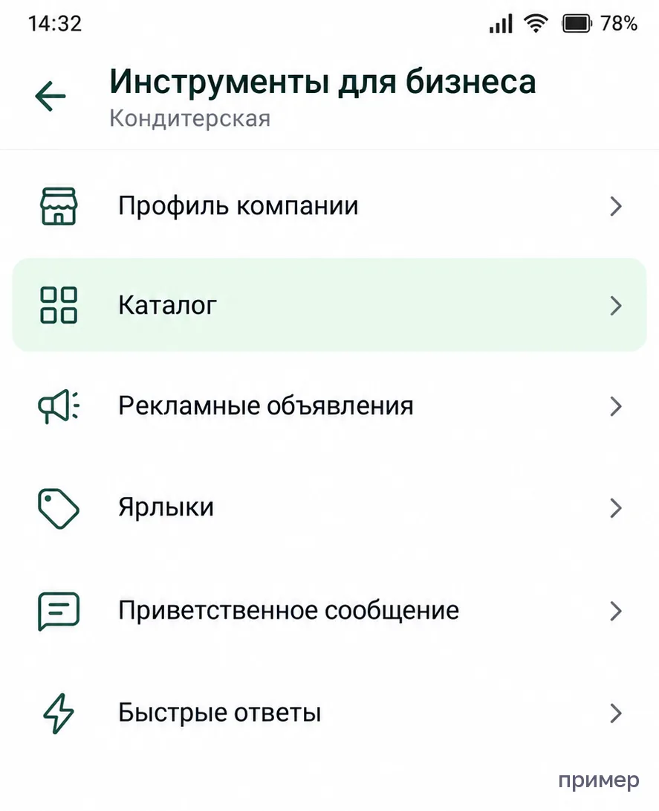
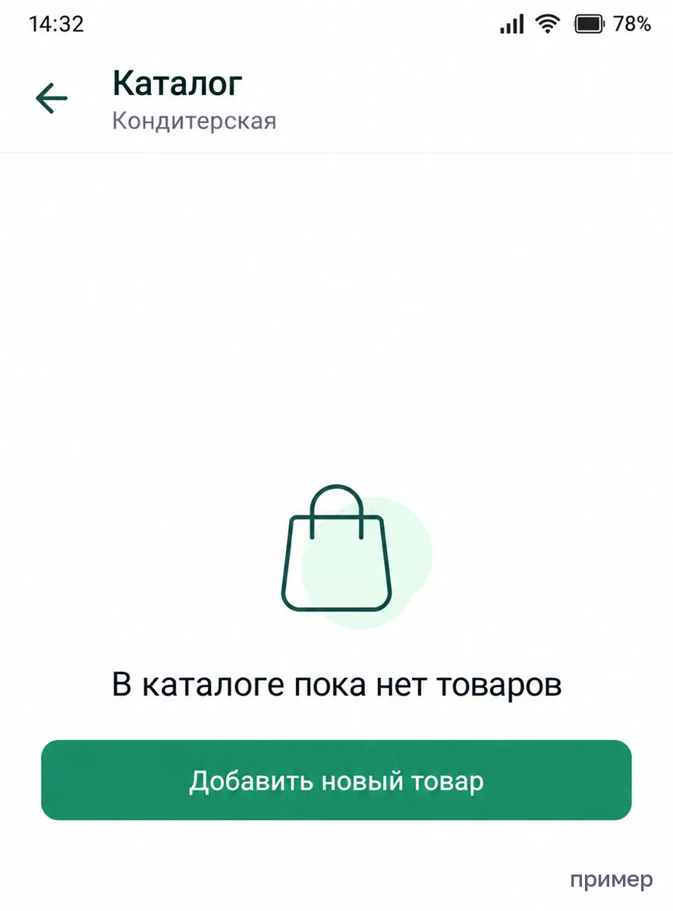
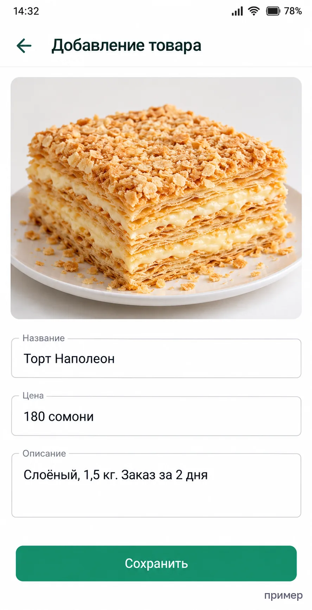
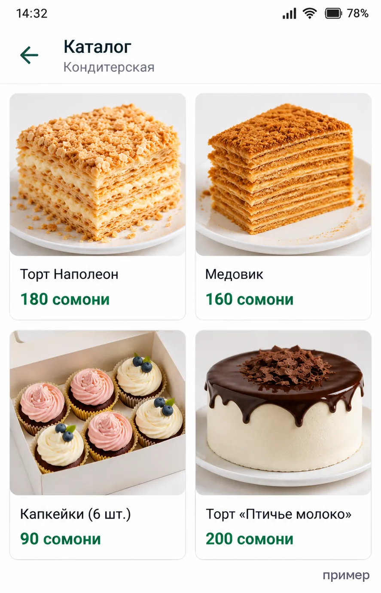

Каталог в WhatsApp за один вечер
Чтобы не отправлять каждому клиенту 15 фото.
Что понадобится
- Приложение WhatsApp Business (бесплатное). Если у вас обычный WhatsApp, при переходе можно оставить этот же номер и чаты — приложение предложит это само.
- Фото товаров, названия и цены.
Шаг 1. Откройте каталог
Инструменты для бизнеса → Каталог

Шаг 2. Добавьте товар
Нажмите «Добавить новый товар».

Заполните:
- Фото: до 10 штук. Первое — самое удачное, его видно в списке.
- Название — как говорит клиент: «Торт Наполеон», а не «Н-2».
- Цена в сомони. Если зависит от веса — цена за 1 кг, и напишите это в описании.
- Описание: что это · состав или размер · за сколько дней заказывать.
Сохраните.

Важно: новый товар WhatsApp проверяет, обычно до 24 часов. Пока идёт проверка, клиенты могут его не видеть — это нормально.
Шаг 3. Разложите по разделам
Если товаров больше 10, сделайте разделы: «Торты», «Капкейки», «На заказ».
Шаг 4. Отправьте каталог
В чате нажмите на скрепку или значок каталога — отправьте весь каталог или один товар. Ссылку на каталог можно поставить в шапку Instagram.

Шаг 5. Фото на телефон — за 5 минут
- Днём у окна, без вспышки.
- Фон — белый лист или ровная скатерть.
- Товар целиком, плюс одно фото крупно (срез, текстура).
5 ошибок, из-за которых по каталогу не покупают
- Нет цены. Человек не хочет спрашивать и уходит туда, где цена видна.
- Тёмные фото. Вкусное на тёмном фото выглядит невкусно.
- Устаревшее наличие. Выбрал, а «этого уже нет» — доверие пропало. Товар, которого нет, скрывайте, а не удаляйте.
- Нет срока. «За сколько дней заказывать?» — первый вопрос. Ответьте заранее.
- Всё одной кучей. 40 товаров без разделов никто не долистает.
Когда каталога в WhatsApp уже мало
- Заказ всё равно уточняете вручную: какой вес, на какой день, куда везти.
- Часть клиентов пишет в Instagram или Telegram, а каталог есть только в WhatsApp.
- Хочется, чтобы клиент сам оформлял заявку, а вы только подтверждали.
Если узнали себя — сделаю бесплатный набросок первого экрана вашего сайта. Не понравится — вы ничего не платите.
Хочу бесплатный набросок